Midjourney 关键词模板化
为了提升生成画面的可控性及一致性，模板化关键词
Chinese New Year reunion dinner dish, braised abalone on a white porcelain plate, festive
配合 ImagePrompt.org 这个提示词反推工具，配合已有的模板化关键词，可以快速实现参考图的风格一致性生成，生成效率大大提高。
面向全球华人用户的新年主题活动 H5。用 AIGC 搭起一座「沉浸式新春城市」：主视觉、四大会场、玩法弹窗和成套 3D 素材都出自同一条流程，让一次节日活动同时完成拉新、留存与付费转化。
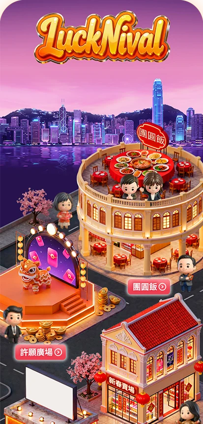
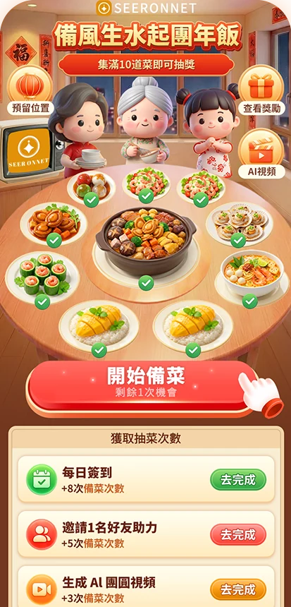
AIGC × OPERATIONS
运营提效 × 视觉升级 × AIGC 赋能。从策划到复盘的每个环节都有 AIGC 参与，选中一个环节查看它在本案例中的落点。
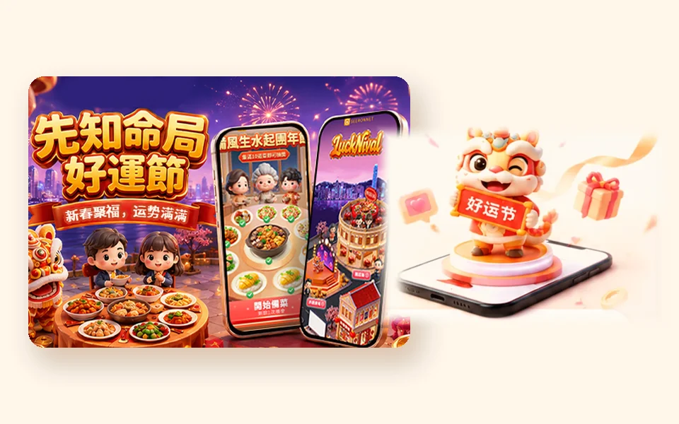
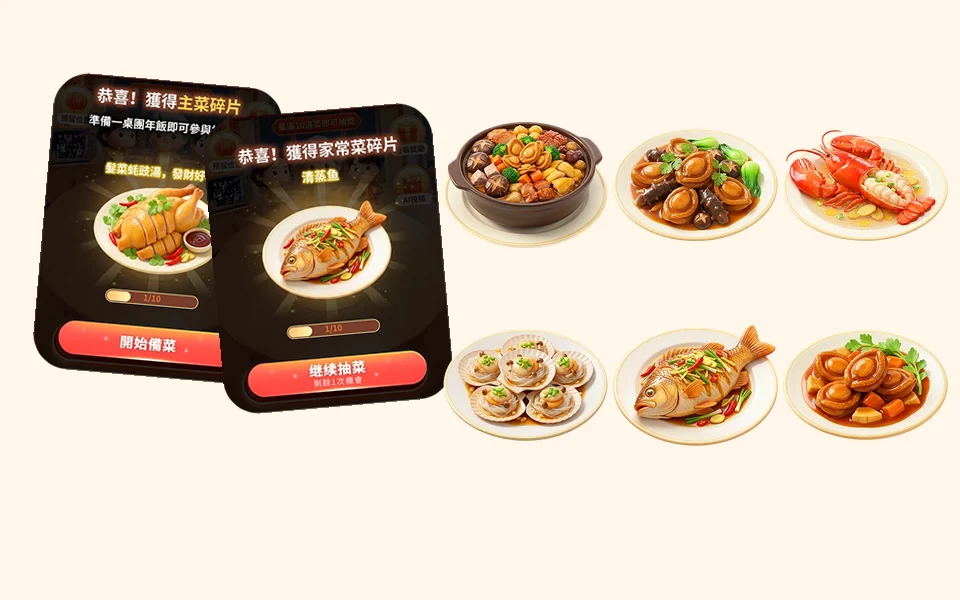
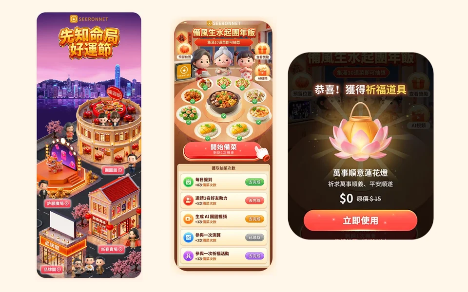
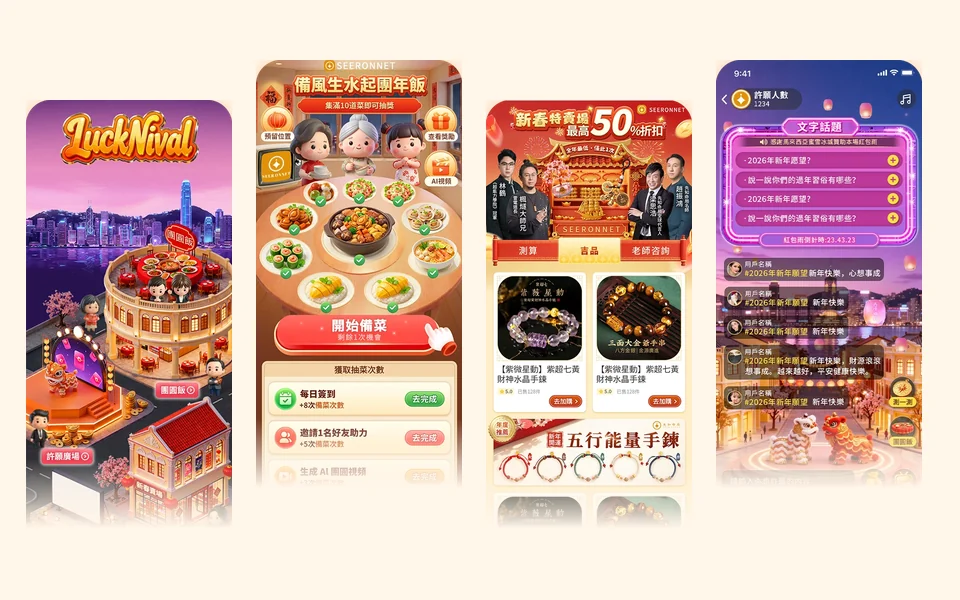
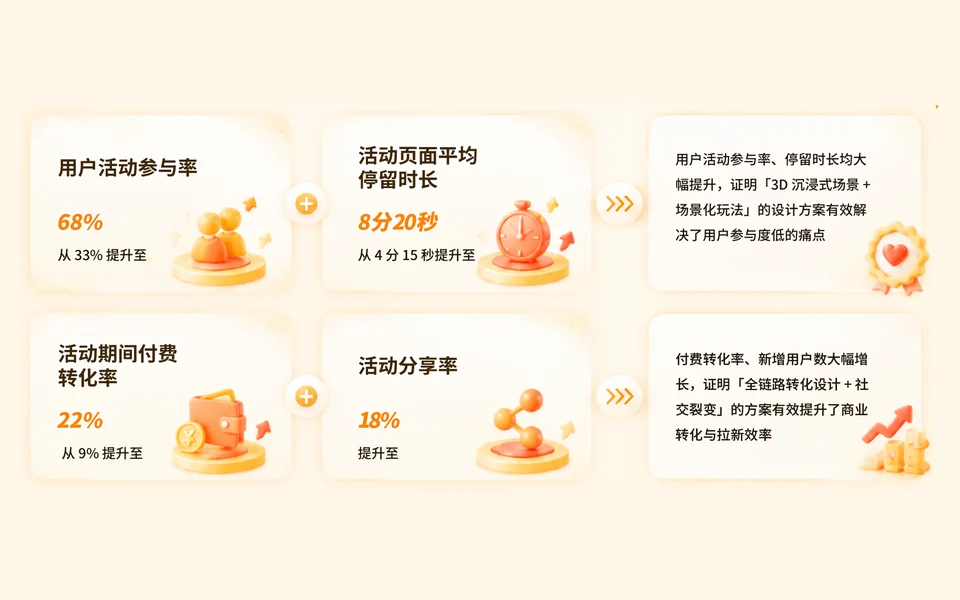
01 · BACKGROUND
以轻量化、国际化、科技感为基调，通过 AIGC 创新互动、沉浸式场景和清晰的活动链路，为海外用户提供一站式的节日参与体验。设计目标：提升参与度、延长停留时长、提高活动转化率，并建立统一、可复用的全球化活动设计体系。
玩法固化、缺乏新意，难以持续吸引用户回访。
与同类产品的节日活动内容模式相似，缺少差异化竞争力。
活动与产品之间链路不连贯，体验断层直接影响整体转化。
实现拉新、留存、付费转化的三重增长，强化产品节日营销的差异化竞争力。
设计核心策略
打造沉浸式新春互动体验，兼顾趣味性与文化感，同时降低参与门槛。
02 · DESIGN GOALS
针对玩法单一、文化辨识度低、转化链路割裂、缺乏技术赋能四个核心问题，在「文化氛围、互动体验、商业转化、AIGC 创新」之间找到平衡。
梳理活动全链路逻辑，建立「主会场入口 / 分玩法模块 / 转化入口」三层清晰层级，降低用户参与门槛和理解成本。
对应痛点 · 节日玩法单一补全活动转化链路，在玩法中自然植入测算、咨询、商城等付费入口，形成「参与、内容消费、付费转化」的闭环。
对应痛点 · 链路割裂融入 AI 素材与 AI 团圆视频等创新互动，提升活动的趣味性与传播性，吸引年轻用户，打造差异化亮点。
对应痛点 · 活动同质化03 · MAIN VENUE
以维多利亚港夜景为背景，把四大核心玩法做成城市里的四栋建筑。选择右侧的设计要点，查看它在页面里的位置；点击建筑上的入口标签，可以直接跳到对应会场。
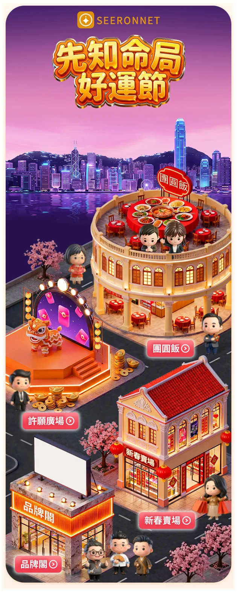
04 · STRATEGY
按用户参与活动的四个阶段拆解页面：每个阶段对应一种设计手段，也对应页面上的一块区域。
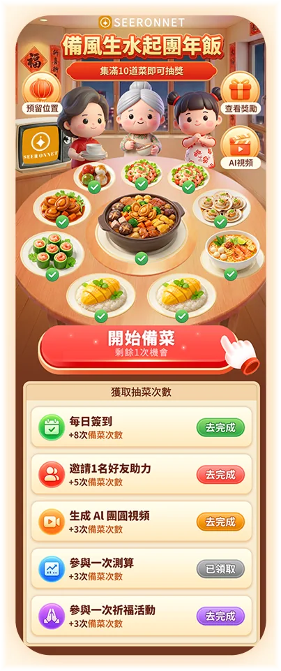
05 · CONTENT MATRIX
每个会场承担不同的业务目标：入口负责分流，团圆饭负责互动与拉新，新春会场负责付费，许愿会场负责分享与情感连接。
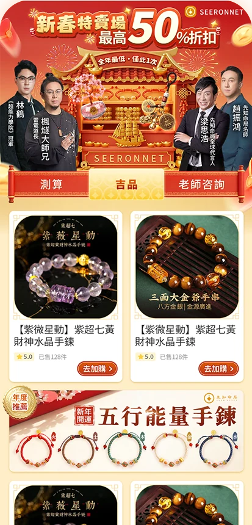
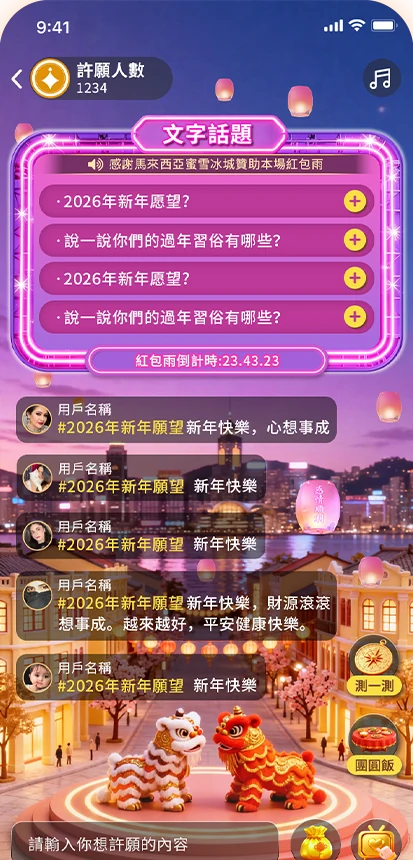
分流 · 认知
LuckNival 立体标题配合维港夜景，第一屏就交代「这是一场新春城市嘉年华」；四大玩法以建筑形式散落在城市中，用户无需阅读说明就知道往哪里点。
06 · AIGC ASSETS
团圆饭会场需要 10 余道风格统一的 3D 菜品、整套抽奖弹窗和多个人物 IP。下面就是活动里真实使用的素材，试试把菜「端上桌」：
集满 10 道菜即可抽奖点击菜品端上桌
统一的 3D 盲盒比例与材质，复用在主会场、团圆饭和品牌阁中，让城市「有人在过年」。
07 · WORKFLOW
AIGC 早已在日常工作中产出成果，但生成效率仍有提升空间。这次把可复用的素材、高频关键词和训练好的模型分类归档，丰富了 AIGC 创作资源，也提升了生成效率。
为了提升生成画面的可控性及一致性，模板化关键词
Chinese New Year reunion dinner dish, braised abalone on a white porcelain plate, festive
配合 ImagePrompt.org 这个提示词反推工具，配合已有的模板化关键词，可以快速实现参考图的风格一致性生成，生成效率大大提高。
常用的设计资源可以训练成 LoRA，批量生成同风格素材
沉淀 + 迭代 + 复用，提升视觉输出效率
08 · VALIDATION
活动上线后从参与、转化、拉新三个维度回看数据，并结合用户访谈验证设计决策。
用户活动参与率
68%
活动前 33%
页面平均停留时长
8分20秒
活动前 4 分 15 秒
活动期间付费转化率
22%
活动前 9%
活动分享率
18%
好友助力与 AI 视频带动传播
活动期间新增用户
+45%
新增用户数增幅
付费用户周复访率
18%
活动前 7%
参与率与停留时长大幅提升，证明「3D 沉浸式场景 + 场景化玩法」解决了参与度低的痛点。
付费转化率与分享率同步增长，证明「全链路转化设计 + 社交裂变」提升了商业转化与拉新效率。
访谈中反复出现「AI 团圆视频、港式新春场景很有新意」，说明 AIGC 与文化调性精准匹配了用户需求。
09 · EXTENSIONS
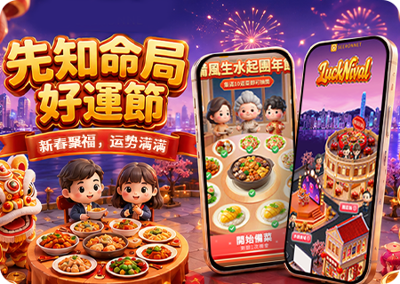
10 · ALL SCREENS
5 个会场页面 · 5 种弹窗 · 按住可左右拖动